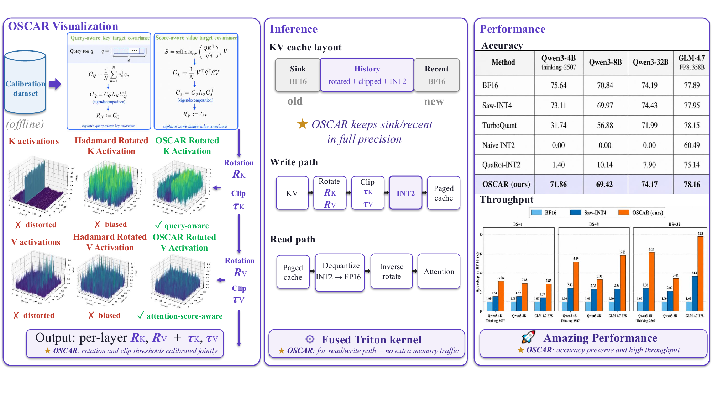
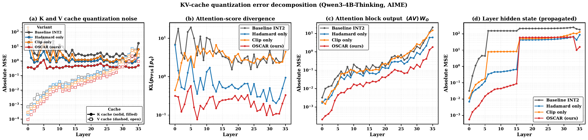
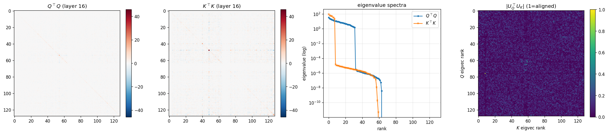
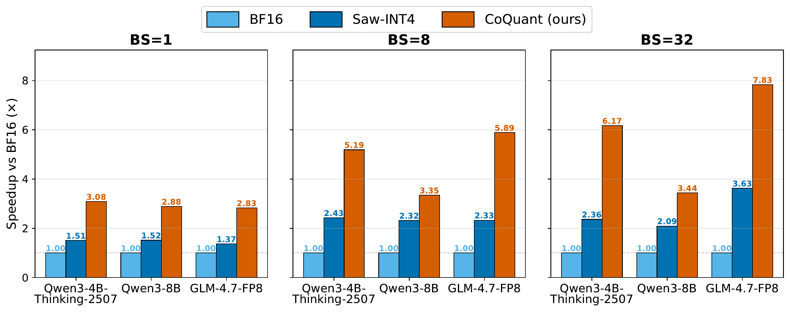

Outlier-dominated scale
A few extreme channels set the min-max range; most values collapse into useless INT2 bins.
INT2 KV-cache serving for long-context reasoning LLMs: attention-aware fixed rotations, BF16 sink/recent protection, and SGLang-ready kernels at 2.28 effective bits per KV element. On Qwen3-4B-Thinking, Qwen3-8B, Qwen3-32B, and GLM-4.7-FP8, the mean gap to BF16 is 3.78, 1.42, −0.02, and +0.27 points respectively, while reducing KV memory by ~8× and increasing large-batch throughput by up to ~7×.
Quantization Pipeline
Run a calibration pass. Dump activations and compute attention-aware covariance targets per layer/head.
Eigendecompose covariances, compose with Hadamard mixing and bit-reversal permutation, then fit token-wise clip thresholds.
Logical cache: [1, S₀] ‖ [S₀+1, t−W] ‖ [t−W+1, t]. New tokens land in recent; oldest recent demotes to INT2.
4 × 2-bit values per byte
k⁺ = Q₂⁺(clip(k·RK, τ)) — token-wise affine asymmetric INT2: each 2-bit code selects one of four reconstruction levels under the token/group scale and zero point.
Two first-stage kernels over BF16 and INT2 segments; online softmax merge produces the same result as full-precision attention.
KV activations have severe channel-wise outliers. At INT2, only four quantization levels exist — outliers dominate the scale and many non-outlier entries map to the same code. Hadamard rotations reduce coordinate spikes, but they do not use the query/value statistics that determine attention error.
A few extreme channels set the min-max range; most values collapse into useless INT2 bins.
Random or Hadamard rotations mix coordinates; they do not choose directions from Q⊤Q or score-weighted value covariance.
Keys affect logits through QK⊤; values affect the weighted sum after softmax. Raw tensor MSE is therefore an indirect objective.
OSCAR separates calibration from serving: fixed rotations and clip thresholds are computed offline, then the online path stores the long-history KV cache in INT2 while preserving a small BF16 window.

R = U · HHad · Pbr), and fit clipping thresholds — Hadamard mixing flattens raw outlier peaks while OSCAR rotations align quantization with attention.
Online: keep sink and recent tokens in BF16; apply rotate–clip–INT2 to history KV inside a paged SGLang cache.
Right panels: main-table accuracy and serving throughput under the same 2.28-BPE cache layout.
Offline calibration estimates CK = Q⊤Q for keys and
CS = V⊤S⊤SV for values, then builds
R = U · HHad · Pbr.
Protect attention sinks and a sliding recent window in full precision while the long history lives in INT2.
Fused Triton kernels rotate, clip, quantize, and pack K/V rows (4×2-bit values per byte); the decode path is compatible with SGLang paged attention.
A rotation that minimizes raw cache reconstruction can still distort the directions used by attention.
OSCAR aligns rotations to Q⊤Q (keys) and V⊤S⊤SV (values) rather than raw cache reconstruction.
The ablation changes the rotation target or removes one factor of R = U · HHad · Pbr; the INT2 layout and BF16 windows stay fixed.
Setup. Qwen3-8B, same INT2 KV budget (sink 64 + recent 256, calibration-derived clip). Each number is the unweighted mean pass@1 accuracy (%) over five benchmarks: GPQA, HumanEval, LiveCodeBench v6, AIME 2025, and MATH-500 (3 seeds in the paper).

OSCAR limits quantization error at every stage
Naive INT2, Hadamard-only, and clip-only baselines diverge in (b)–(d); full OSCAR stays closest to FP16.

Q and K covariance bases are misaligned
Left: heatmaps of Q⊤Q and K⊤K. Center: eigenvalue spectra (both low-rank, different decay). Right: |UQ⊤ UK| eigenvector alignment (1 = aligned). A bright diagonal would mean shared eigenbases; the near-uniform pattern shows Q and K directions are nearly uncorrelated — rotating only for K⊤K outliers misses what attention reads via Q⊤Q.
Rotation intuition
R = U · HHad · Pbr is ordered this way
OSCAR separates the three factors: U exposes attention-importance directions,
Hadamard equalizes the diagonal importance metric and spreads token outliers, and bit-reversal
balances high-importance directions across quantization groups.
OSCAR implements an SGLang INT2 KV-cache mode for paged attention and prefix caching.
Evaluated on reasoning models with up to 32K-token traces across five reasoning and coding benchmarks. RULER-NIAH is evaluated up to 128K on Qwen3 models.
3.78
BF16 gap (pts) @ 2.28 BPE
1.42
BF16 gap (pts) @ 2.28 BPE
≈ BF16
−0.02 / +0.27 mean gap
+40.1
mean score on Qwen3-4B (2.28 vs 3.25 BPE)
Main accuracy on four model configurations and five benchmarks (32K generation; μ±σ over 5 seeds unless noted). BPE = effective bits per KV element @ 128K context. Drop = gap to BF16 mean.
| Model | Method | BPE | GPQA | HumanE | LCB v6 | AIME25 | MATH500 | Mean | Drop |
|---|---|---|---|---|---|---|---|---|---|
| Qwen3-4B-Thinking | BF16 | 16.00 | 67.27 | 94.05 | 48.66 | 74.67 | 93.55 | 75.64 | — |
| Saw-INT4 | 4.25 | 66.37 | 89.78 | 46.20 | 70.00 | 93.19 | 73.11 | −2.53 | |
| TurboQuant* | 3.25 | 41.41 | 31.83 | 0.58 | 16.67 | 68.20 | 31.74 | −43.90 | |
| QuaRot-INT2 | 2.25 | 0.34 | 0.98 | 0.00 | 0.00 | 5.67 | 1.40 | −74.24 | |
| OSCAR | 2.28 | 64.95 | 92.24 | 45.38 | 64.00 | 92.75 | 71.86 | −3.78 | |
| Qwen3-8B | BF16 | 16.00 | 56.67 | 85.95 | 49.01 | 70.00 | 92.59 | 70.84 | — |
| Saw-INT4 | 4.25 | 54.85 | 86.44 | 47.95 | 68.00 | 92.63 | 69.97 | −0.87 | |
| TurboQuant* | 3.25 | 55.05 | 74.63 | 21.05 | 46.67 | 87.00 | 56.88 | −13.96 | |
| QuaRot-INT2 | 2.25 | 14.98 | 9.80 | 0.58 | 2.22 | 23.13 | 10.14 | −60.70 | |
| OSCAR | 2.28 | 55.05 | 87.88 | 46.32 | 66.67 | 92.22 | 69.42 | −1.42 | |
| Qwen3-32B | BF16 | 16.00 | 58.49 | 91.19 | 59.06 | 68.67 | 93.55 | 74.19 | — |
| TurboQuant* | 3.25 | 58.69 | 88.41 | 55.56 | 66.67 | 90.60 | 71.99 | −2.20 | |
| OSCAR | 2.28 | 60.40 | 90.12 | 53.57 | 74.00 | 92.75 | 74.17 | −0.02 | |
| GLM-4.7-FP8 | BF16 | 16.00 | 73.23 | 91.46 | 49.12 | 80.00 | 95.66 | 77.89 | — |
| TurboQuant* | 3.25 | 66.67 | 90.24 | 58.48 | 80.00 | 95.39 | 78.15 | +0.26 | |
| OSCAR | 2.28 | 73.57 | 91.06 | 52.63 | 78.89 | 94.66 | 78.16 | +0.27 |
*TurboQuant: single-run (vLLM path too slow for 5-seed repeats). Naive INT2 and additional baselines in the paper.

End-to-end serving throughput from the paper
Job-level throughput at 100k-token sequence length as batch size increases. Each group compares BF16, Saw-INT4, and OSCAR on Qwen3-4B/8B and GLM-4.7-FP8.
TurboQuant and OSCAR both use rotations and low-bit codes, but their measured objectives differ: TurboQuant reports a vector-quantizer backend; OSCAR reports an SGLang KV-cache layout and decode path.
A hybrid is possible as a new experiment, but it is not the code path evaluated here. TurboQuant exposes an online quantizer; OSCAR fixes the KV layout, BF16 windows, and SGLang decode kernels around its rotation target.
Q⊤Q, V⊤S⊤SV)Possible hybrid to test: One could explore TurboQuant-style codebooks after OSCAR's attention-aware rotation, or test OSCAR's rotation targets inside a TurboQuant-like backend.
Why this is not a one-line change: Swapping one method for the other would require new kernels, revised bit accounting (effective BPE), and new accuracy/throughput measurements for the resulting cache layout.
In the current implementations, they are not interchangeable modules. TurboQuant targets generic vector quantization; OSCAR fixes the rotation target, BF16 windows, INT2 cache layout, and SGLang kernels as one serving path.
Paper citation forthcoming — please cite the OSCAR GitHub repository until then.
@misc{oscar2026github,
title={{OSCAR}: Offline Spectral Covariance-Aware Rotation for 2-bit {KV} Cache Quantization},
author={Zhou, Zhongzhu and Zhuang, Donglin and Li, Jisen and Chen, Ziyan and Song, Shuaiwen Leon and Athiwaratkun, Ben and Wu, Xiaoxia},
year={2026},
howpublished={GitHub repository},
url={https://github.com/FutureMLS-Lab/OSCAR},
note={Paper citation forthcoming}
}